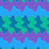
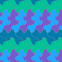
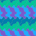

Polycairos, one-sided: isohedral number 4
4 shapes · each shown with one of its simplest grid-aligned tilings, coloured by orbit · all galleries · family table


10-cairo (one-sided) · k = 4



10-cairo (one-sided) · k = 4


10-cairo (one-sided) · k = 4